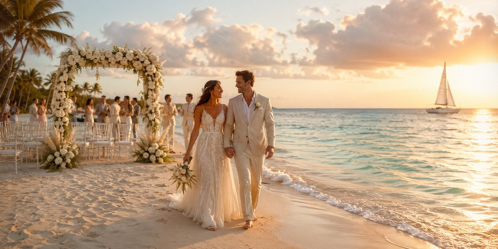
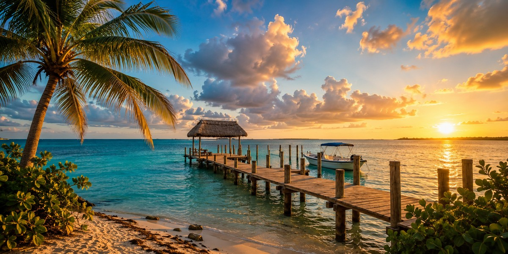

Riviera Maya Explained: Cancun, Playa & Tulum
Understand how Cancun, Playa del Carmen, Tulum and the resort zones differ — the map to read before you shortlist any hotel.

A mindful choice of destinations, hotels and holiday format — without mistakes or overpaying.
Choose a country →Three principles that help you choose your holiday consciously.
We look for recurring complaints and patterns in reviews, rather than relying solely on the overall rating.
We assess terrain, distance to the beach and the actual position of the hotel using maps and guest photos.
We check taxes, resort fees and cancellation terms so you can see the true price of your holiday.
Mexico is the current main focus, while Egypt and Turkey remain as supporting sections
Mexico resort & hotel guides
Cancun, Playa del Carmen & Tulum
Real travel planning without booking mistakes
Red Sea resort guides
Flights, hotels & entry planning
Resorts, beaches & practical travel tips
Istanbul & beach resort guides
Areas, hotels & trip planning
Smart resort planning & local insights
New to the Riviera Maya? Read the hub first — it organizes every guide by the decision you're making. Then pick a starting point below.
Open the Riviera Maya Travel Hub →
Understand how Cancun, Playa del Carmen, Tulum and the resort zones differ — the map to read before you shortlist any hotel.

An honest, decision-first read on where to take your first Caribbean beach trip — and who Cancun, the Riviera Maya, Tulum and Punta Cana each actually suit.

Before you reserve: area, beach type, reviews, the real final price, room type, resort style, and the cancellation red flags.

Dry season, prices, crowds and sargassum month by month — the best time to go for first-timers, families and budget trips.

A realistic 2026 budget across three travel styles, from roughly $2,100 to $3,800 — flights, hotels, food and the hidden costs.

What the advisories actually say, which everyday risks matter most, and how to avoid the few things that go wrong for tourists.

Lower your sargassum odds by zone: Playa Mujeres, the sheltered north Hotel Zone and reef-buffered Puerto Morelos, with the resorts that manage their beaches best.

Actual 2026 prices for Cancun spa day passes and Tulum jungle retreats. Learn how much a Riviera Maya wellness vacation really costs and how to avoid the tourist traps.

Start here. Every Cancun and Riviera Maya guide sorted by the decision you're making — where to stay, how much it costs, when to go, and what to skip.

Social Playa del Carmen, quiet-romantic Cancun adults-only or boutique Tulum: pick an LGBTQ+ welcoming resort by atmosphere, zone and couple-friendly policy.

Closer flight or better value? A practical side-by-side on flight time, beaches, all-inclusive coverage, and total cost to pick your Caribbean trip.

Resort-centric ease or cultural immersion? A practical side-by-side on beaches, safety, all-inclusive style, food, flights, and budget to choose between Cancun and Jamaica.

Wedding formats, resort zones, realistic 2026 budgets for 20 vs 50 guests, what packages include, and legal vs symbolic ceremonies in Mexico.

Clear Caribbean water and a 15-minute ferry, or a car-free island and whale sharks? A practical side-by-side to pick the right island for your trip.
A practical playbook for group trips to Cancun: choose the right format, base the group well, split the money cleanly, and avoid the mistakes that ruin friend vacations.
Travel Radar LK is an independent project for travelers who want to plan trips more consciously. The current main focus is Mexico and the Caribbean, while Egypt and Turkey remain as supporting sections. The site publishes practical articles, location comparisons, and honest travel breakdowns without unnecessary noise.
If the site uses affiliate links anywhere, this is stated openly. Read more about the project →